import geopandas as gpd
import pandas as pd
from shapely.geometry import Point
import matplotlib.pyplot as plt
from matplotlib.colors import ListedColormapDocument Title
Reading Public Health Services- Chicago Primary Care Community Health Centers Maps
filepath = "/Users/tsaili-ting/Uchicago/Year2/Y2Fall/Python2/final_project/Map_-_Public_Health_Services_-_Chicago_Primary_Care_Community_Health_Centers.csv"
map = gpd.read_file(filepath)# Clean the dataset and make it a geo dataframe
df = pd.DataFrame(map)
# Extract Coordinates
df[['address', 'coordinates']] = df['Address'].str.extract(r'^(.*)\n\((.*)\)$')
df[['latitude', 'longitude']] = df['coordinates'].str.split(', ', expand=True)
# Convert Latitude and Longitude to Numeric
df['latitude'] = pd.to_numeric(df['latitude'])
df['longitude'] = pd.to_numeric(df['longitude'])
# Create Geometry Column
df['geometry'] = df.apply(lambda row: Point(row['longitude'], row['latitude']), axis=1)
# Convert to GeoDataFrame
gdf = gpd.GeoDataFrame(df, geometry='geometry')
# Drop unnecessary columns if desired
gdf = gdf.drop(columns=['Address', 'coordinates'])
# Display the GeoDataFrame
gdf.head()| Facility | Community Area (#) | Phone | FQHC, Look-alike, or Neither; Special Notes | address | latitude | longitude | geometry | |
|---|---|---|---|---|---|---|---|---|
| 0 | Mercy Family Health Center @ Oakwood Shores | OAKLAND (36) | (773) 451-0460 | Look-alike | 3753 S. Cottage Grove60653 | 41.826722 | -87.608287 | POINT (-87.60829 41.82672) |
| 1 | ACCESS Southwest Family Health Center | GARFIELD RIDGE (56) | (866) 882-2237 | FQHC | 4839 W. 47th Street60638 | 41.807575 | -87.744602 | POINT (-87.7446 41.80757) |
| 2 | Heartland Health Outreach- Refugee Health | UPTOWN (3) | (773) 751-1744 | FQHC; specialize in refugee health | 4750 N Sheridan Rd60640 | 41.968431 | -87.654857 | POINT (-87.65486 41.96843) |
| 3 | Heartland Health Center- Hibbard Elementary Sc... | ALBANY PARK (14) | (773) 336-6100 | FQHC; School-based health center (open to comm... | 4930 North Sawyer Avenue60625 | 41.970847 | -87.709774 | POINT (-87.70977 41.97085) |
| 4 | Near North - Winfield Moody Health Center | NEAR NORTH SIDE (8) | (312) 337-1073 | FQHC | 1276 N. Clybourn60610 | 41.905355 | -87.641786 | POINT (-87.64179 41.90535) |
# Filter GeoDataFrame to keep points within Chicago's bounding box
point = gdf[
(gdf['latitude'] >= 41.64) & (gdf['latitude'] <= 42.02) &
(gdf['longitude'] >= -87.94) & (gdf['longitude'] <= -87.52)
]# Plot only the points in Chicago
point.plot(marker='o', color='green', markersize=5, figsize=(10, 10))
plt.title("Map of Locations in Chicago")
plt.xlabel("Longitude")
plt.ylabel("Latitude")
plt.grid(True)
plt.show()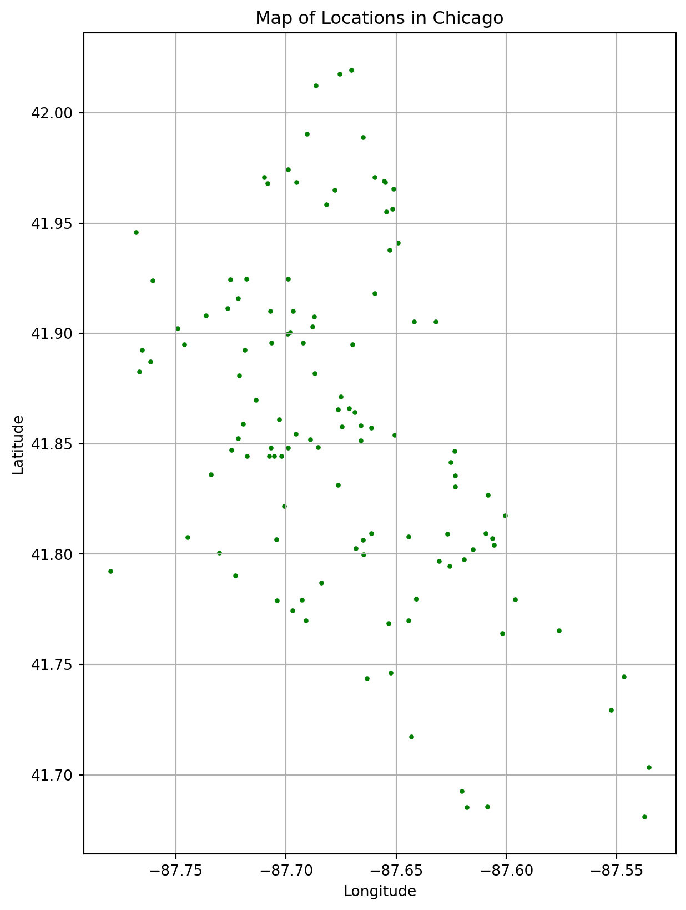
# layering with chicago community shape file
chi_shp = gpd.read_file("/Users/tsaili-ting/Uchicago/Year2/Y2Fall/GIS/Final project/chicomm/chicomm.shp")point = point.set_crs(epsg=4326)
point = point.to_crs(epsg=32616)
chi_shp = chi_shp.to_crs(epsg=32616)Base Map with the points
# Create a base map with the shapefile
ax = chi_shp.plot(color='lightgrey', edgecolor='black', figsize=(10, 10), alpha=0.5)
# Overlay the points on the map
point.plot(ax=ax, marker='o', color='red', markersize=10)
# Add a title and labels
plt.title("Chicago Map with Points")
plt.xlabel("Longitude")
plt.ylabel("Latitude")
plt.show()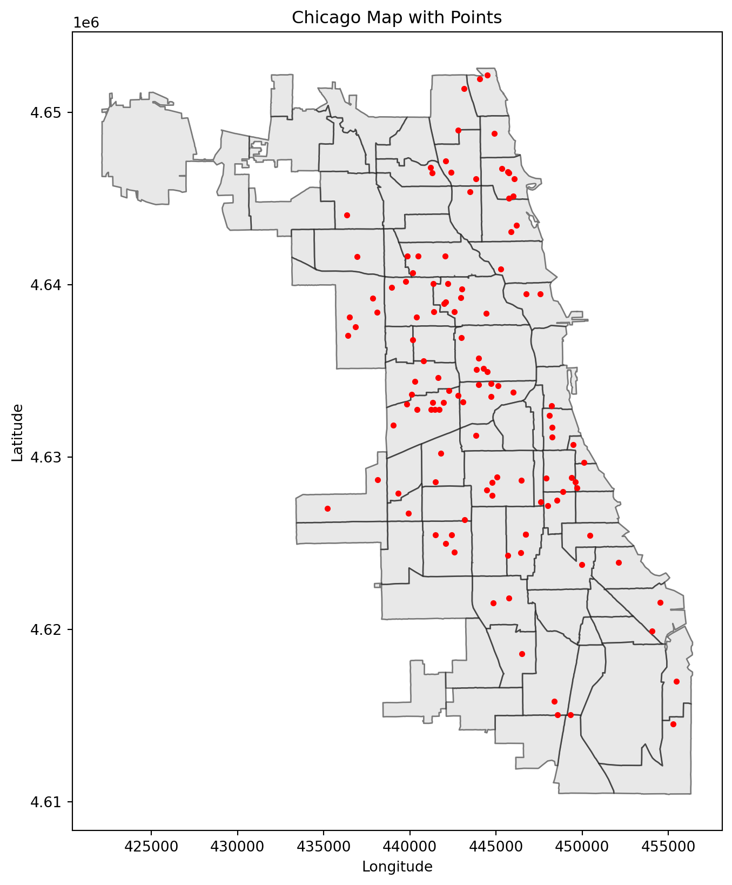
Highlight the area with the health centers
# highlight the area that has Chicago Primary Care Community Health Centers
# Perform spatial join
highlighted_areas = chi_shp.sjoin(point, how='inner', predicate='intersects')
# Keep only unique community areas
highlighted_areas = highlighted_areas.drop_duplicates(subset=chi_shp.geometry.name)# Add a highlight flag
chi_shp["has_points"] = chi_shp.geometry.apply(lambda geom: geom in highlighted_areas.geometry.values)# Plot shapefile, highlighting areas with points
custom_cmap = ListedColormap(["yellow", "lightgrey"])
ax = chi_shp.plot(
column="has_points",
cmap=custom_cmap, # Colors: cool areas without points, warm areas with points
edgecolor="grey",
figsize=(12, 12),
legend=True
)
# Add the points to the map
point.plot(ax=ax, marker='o', color='red', markersize=5, label="Points")
# Add labels and title
plt.title("Highlighted Community Areas with Points")
plt.xlabel("Longitude")
plt.ylabel("Latitude")
plt.legend()
plt.show()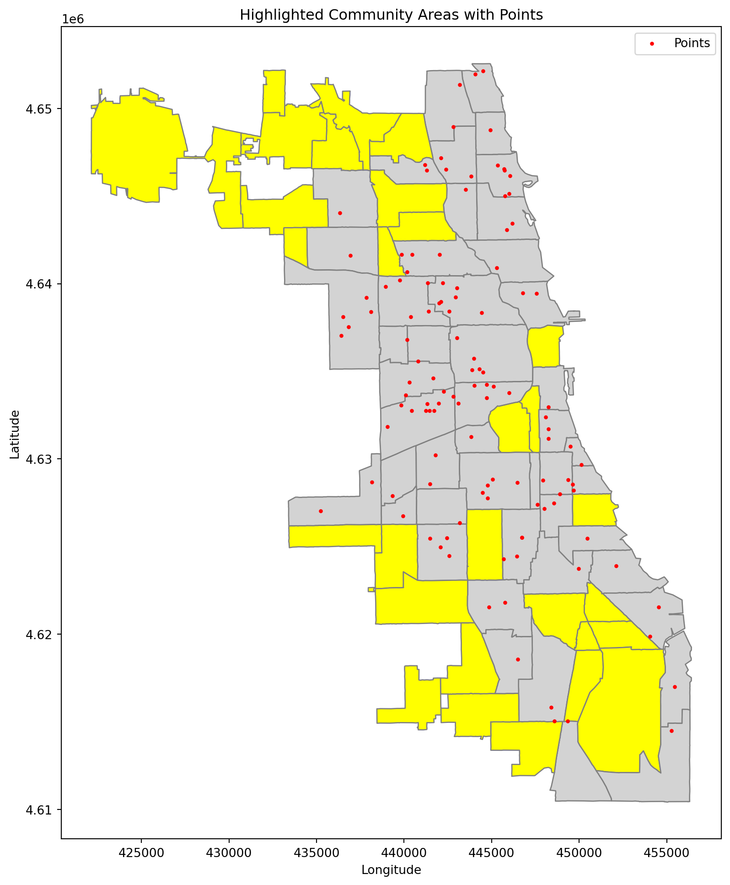
Combined Demographic and Health outcome data
# Spatial join demographic data
chi_dem = pd.read_csv("Public_Health_Statistics_-_Selected_public_health_indicators_by_Chicago_community_area_-_Historical_20241125.csv")
# fix the wrong community name
chi_dem["Community Area Name"] = chi_dem["Community Area Name"].replace(
{"Montclaire": "Montclare"}
)
# Merge shp with the demographic dataset
chi_shp_dem = chi_shp.merge(chi_dem, left_on="DISTITLE",right_on = "Community Area Name", how="outer")
chi_shp_dem = chi_shp_dem.to_crs(epsg=32616)Look at the color map in income, education, poverty rate, and health outcome
columns = ['Cancer (All Sites)','Diabetes-related', 'Below Poverty Level','No High School Diploma', 'Per Capita Income', 'Unemployment']
for col in columns:
fig, ax = plt.subplots(1, 1, figsize=(5, 5))
chi_shp_dem.plot(
column=col,
legend=True,
ax=ax
)
ax.set_title(col) # Set the title for the plot
plt.show()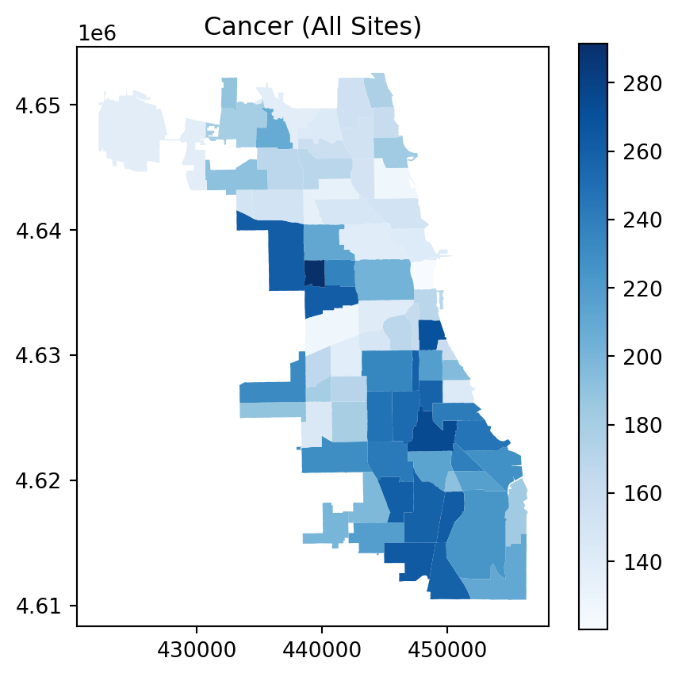
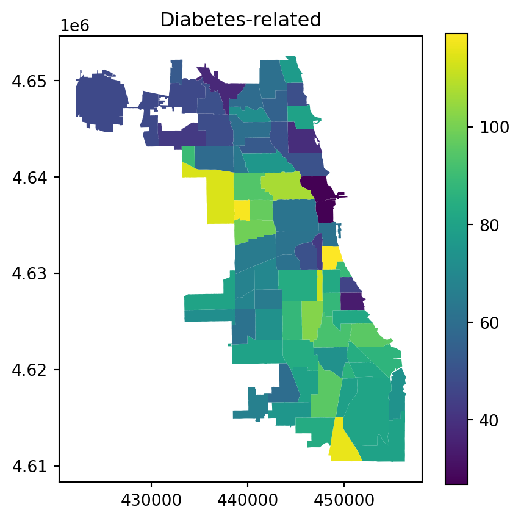
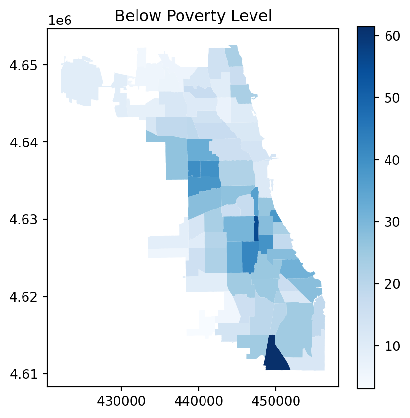
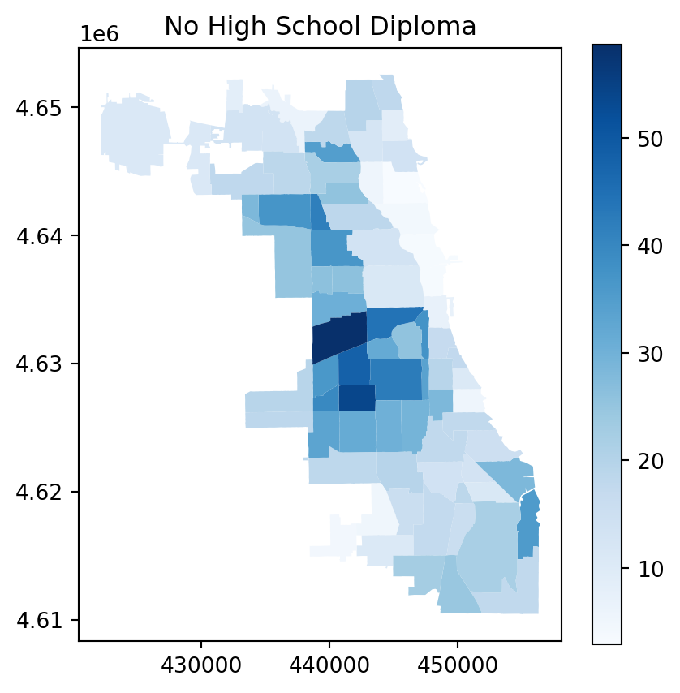
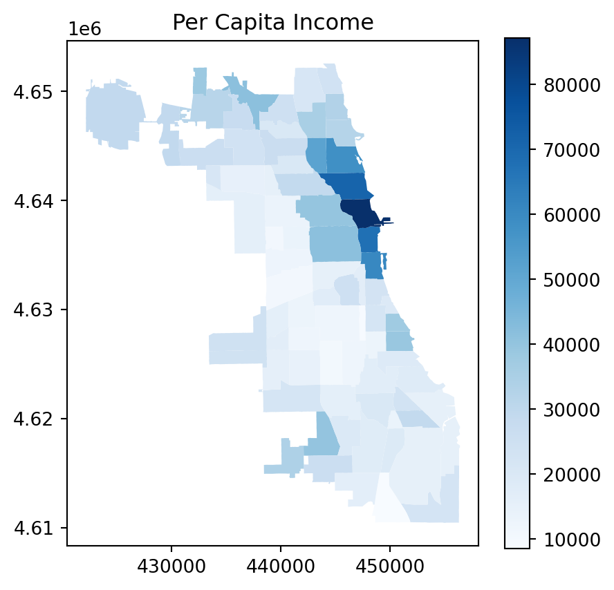
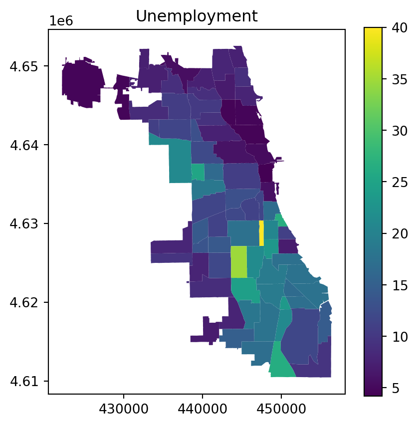
Look at the 1 mile buffer for the primary care center
# create the 1 mile buffer
point["buffer"] = point.geometry.buffer(1609)
buffers = gpd.GeoDataFrame(point, geometry="buffer", crs=point.crs)Look at 1 mile buffer with health outcome
Cancer Rate in Community Area
fig, ax = plt.subplots(1, 1, figsize=(5, 5))
chi_shp_dem.plot(ax=ax, column="Cancer (All Sites)", cmap="Reds", edgecolor="lightgrey",legend=True, label="Cancer Rates")
buffers.plot(ax=ax, color="blue", alpha=0.2, edgecolor="None")
plt.title(" 1 Mile Buffers and Cancer Rates in Community Areas")
plt.legend()
plt.show()/var/folders/xp/13j7_6qs0bjcjm3r53h36v0h0000gn/T/ipykernel_45914/3426493884.py:6: UserWarning: Legend does not support handles for PatchCollection instances.
See: https://matplotlib.org/stable/tutorials/intermediate/legend_guide.html#implementing-a-custom-legend-handler
plt.legend()
/var/folders/xp/13j7_6qs0bjcjm3r53h36v0h0000gn/T/ipykernel_45914/3426493884.py:6: UserWarning: No artists with labels found to put in legend. Note that artists whose label start with an underscore are ignored when legend() is called with no argument.
plt.legend()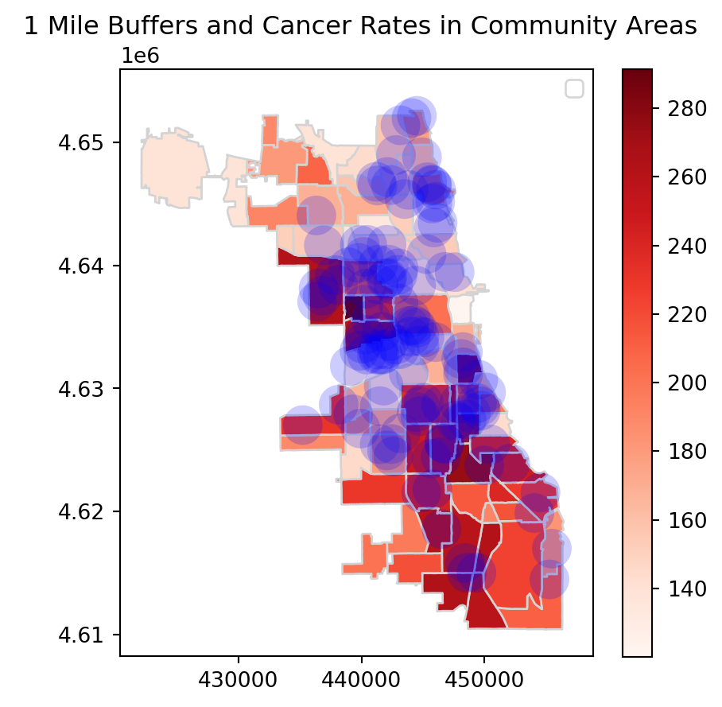
Diabetes rate in Community Area
fig, ax = plt.subplots(1, 1, figsize=(5, 5))
chi_shp_dem.plot(ax=ax, column="Diabetes-related", cmap="Blues", edgecolor="lightgrey",legend=True, label="Diabetes Rates")
buffers.plot(ax=ax, color="blue", alpha=0.2, edgecolor="None")
plt.title(" 1 Mile Buffers and Diabetes in Community Areas")
plt.legend()
plt.show()/var/folders/xp/13j7_6qs0bjcjm3r53h36v0h0000gn/T/ipykernel_45914/1093011981.py:6: UserWarning: Legend does not support handles for PatchCollection instances.
See: https://matplotlib.org/stable/tutorials/intermediate/legend_guide.html#implementing-a-custom-legend-handler
plt.legend()
/var/folders/xp/13j7_6qs0bjcjm3r53h36v0h0000gn/T/ipykernel_45914/1093011981.py:6: UserWarning: No artists with labels found to put in legend. Note that artists whose label start with an underscore are ignored when legend() is called with no argument.
plt.legend()
Below Poverty Level in Community Area
fig, ax = plt.subplots(1, 1, figsize=(5, 5))
chi_shp_dem.plot(ax=ax, column="Below Poverty Level", cmap="Greens", edgecolor="lightgrey",legend=True, label="Below Poverty Level")
buffers.plot(ax=ax, color="blue", alpha=0.2, edgecolor="None")
plt.title(" 1 Mile Buffers and Below Poverty Levelin Community Areas")
plt.legend()
plt.show()/var/folders/xp/13j7_6qs0bjcjm3r53h36v0h0000gn/T/ipykernel_45914/1547493664.py:6: UserWarning: Legend does not support handles for PatchCollection instances.
See: https://matplotlib.org/stable/tutorials/intermediate/legend_guide.html#implementing-a-custom-legend-handler
plt.legend()
/var/folders/xp/13j7_6qs0bjcjm3r53h36v0h0000gn/T/ipykernel_45914/1547493664.py:6: UserWarning: No artists with labels found to put in legend. Note that artists whose label start with an underscore are ignored when legend() is called with no argument.
plt.legend()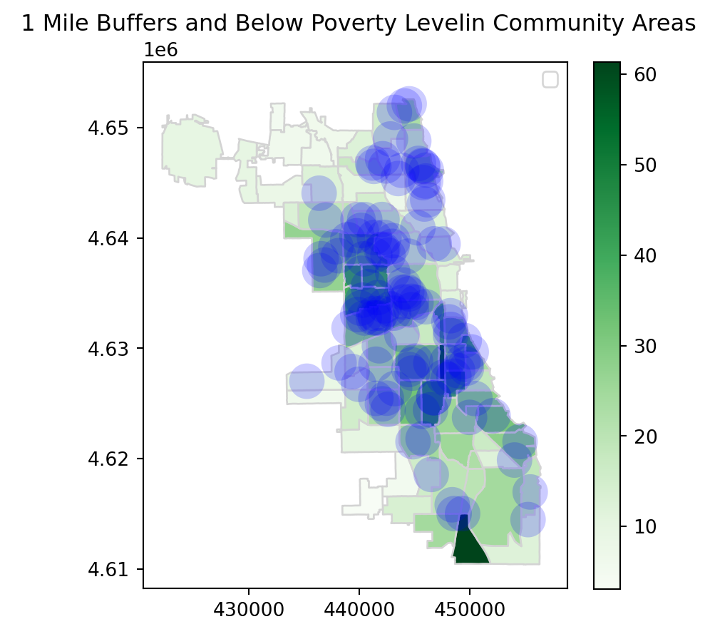